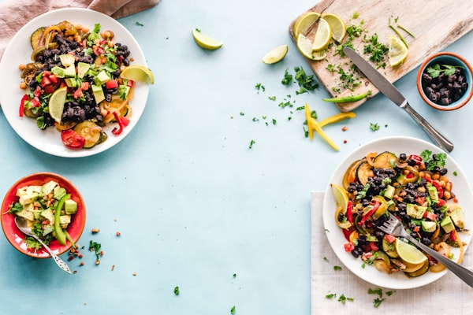

Warm sourdough
Whipped cultured butter, sea salt
G · L
The current menu / Autumn 2026
Our menu is a conversation between the growers we know, the fire we trust and the appetite you bring.
Whipped cultured butter, sea salt
G · L

Pickled apple, horseradish cream
G · L · H

Sheep's curd, toasted seeds, dill oil
L
Green strawberry, sea herbs, buttermilk
L · R
Charred leek, anchovy, rosemary jus
H

Brown crab, fennel, saffron broth
H · R